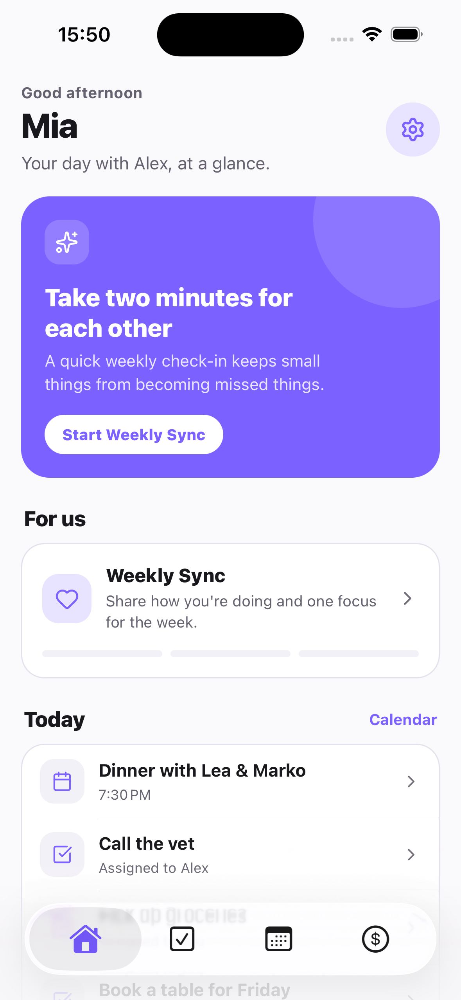

The short answer
A free app for couples that covers budget and tasks: Tandem: Couples Organizer is free to start on iOS and Android. It combines shared to-do lists (with assigned tasks) and shared expense tracking (split rules, a running balance, settlements) for two people. It does not link to bank accounts and it does not have per-category budgets.
Disclosure: Tandem publishes this guide. We list what Tandem does not do, so you can pick the right tool.
What "budget" means for most couples
Couples who search for a budget app usually want one of three things. Pick yours first, because each needs a different tool.
| You want to... | You need | Tandem fits? |
|---|---|---|
| Know who paid and who owes whom | Shared expense log with split rules and a balance | Yes |
| See shared spending by category | Categories on each expense | Yes: 10 default categories plus your own |
| Keep tasks and money in one place | To-dos and expenses in one app | Yes |
| Set a limit for each category and get alerts | A category-budget app | No. Tandem has no per-category budgets |
| Import transactions from your bank automatically | A bank-linked app | No. Tandem does not link to banks |
Three ways to manage budget and tasks for free
| Approach | Tasks | Shared spending | Main weakness |
|---|---|---|---|
| Tandem: Couples Organizer | Shared and personal lists, assigned tasks | Expense log, split rules, balance, settlements, recurring expenses | Manual entry. No bank link, no category limits |
| Shared spreadsheet | Possible, but you build it | Fully flexible, including category limits | You design it, maintain it and remember to open it |
| Separate apps (a to-do app plus an expense or budget app) | Depends on the to-do app | Depends on the budget app | Two places to check. Plans and money drift apart |
If you already use a bank-linked budgeting app and like it, keep it. Many couples pair a tool like that with a simple shared task list. See our guides to shared to-do apps and the couple app stack.
What Tandem covers: tasks
- Default and custom lists, each shared or personal, with an emoji and a description
- Tasks you can assign to yourself or your partner
- Photos on tasks and reminders
- Widgets for upcoming events, to-dos and finance balance on iOS and Android
What Tandem covers: money
| Feature | How it works |
|---|---|
| Expense log | Amount, title, category and optional note |
| Categories | 10 default categories plus custom ones |
| Split rules | Choose the share per expense, including cases where your partner owes it all |
| Balance | A running "who owes whom" total |
| Settlements | Record when one partner pays the other back |
| Recurring expenses | Set up repeating costs such as rent |
| Debt reminder | A nudge when a balance is open |
| Currency | Choose your own |
Tandem: Couples Organizer
Tasks and money on one Home screen
Tandem shows the next event, shared tasks and your balance together, so the weekly "who is doing what, who paid what" talk takes minutes.
- Pair with an invite link or code
- Assign each task to one person
- Log expenses and see who owes whom
- Review it all in the Weekly Sync

A 20-minute setup for budget and tasks
| Step | Do this | Time |
|---|---|---|
| 1 | Install the app and pair with your partner | 5 min |
| 2 | Decide the split rule: 50/50, proportional or by who benefits. See 5 ways to split expenses | 5 min |
| 3 | Add this week's open tasks and give each one an owner | 5 min |
| 4 | Log your last few shared costs and any repeating ones | 5 min |
Then add one habit: a short weekly check of tasks and spending. Our couple budget planning guide and the 15-minute weekly check-in show how.
Try it with your partner. Download Tandem free to start on iOS or Android, or see the couple expense tracker.
Frequently asked questions
What is a good free app for couples to manage budget and tasks?
Tandem: Couples Organizer is free to start on iOS and Android. It has shared and personal to-do lists with assigned tasks, plus shared expense tracking with split rules, a running balance and settlements. It is a shared expense tracker, not a bank-linked budgeting app.
Can Tandem link to our bank accounts?
No. Tandem does not connect to bank accounts. You log each expense yourself, with an amount, title, category and optional note.
Does Tandem set a budget for each spending category?
No. Tandem does not have per-category budgets or spending limits. It has 10 default categories plus custom ones, so you can label spending, but you set any limits yourselves. A simple way is to agree a monthly number for each category in your weekly review.
Is Tandem really free?
Tandem is free to start on iOS and Android. Check the App Store or Google Play listing for the current details of any optional upgrade.
Can we split costs unevenly?
Yes. When you add an expense you choose how to split it, including options where your partner owes all of it. Tandem keeps a running balance of who owes whom, and you can record settlements.
Do we both need the app?
Yes, for shared features. One partner creates an invite and the other joins by link or code. You can try the app alone first, and your data moves to the shared space after you pair.